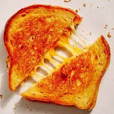

Grilled Cheese Toastie

Delicious Grilled Cheese recipe
This is a simple quick easy recipe that will be enjoyed by all.
Ingredients
- Cheese
- Onion
- Toast Slices
Steps
- Get 2 slices of toast
- Add the cheese and onion to one side
- Put the other slice of toast on top
- Toast the pieces of bread together until golden brown